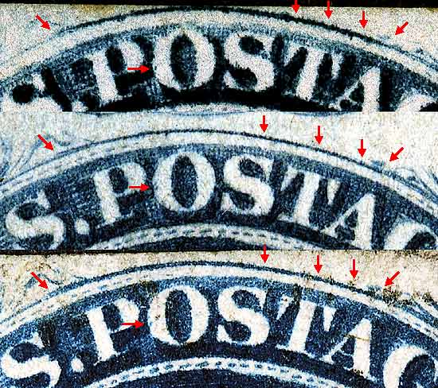
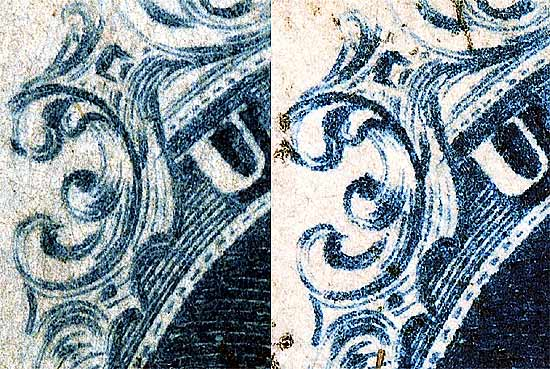
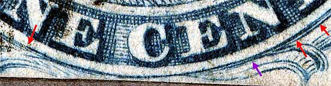

Pos 54R1L, (Scott #9)
Type IV, Relief A
Issued both imperforate and perforated.
Perforated copies are more scarce.
SINGLE RECUT TOP
SINGLE RECUT BOTTOM
SPLIT TOP LINE
This is part of a horizontal strip of 2. See 53R1L




Thanks for visiting this site. I hope you learn something new as we are making new discoveries all the time. You, the visitor, have my permission to link to my pages and to share the INFORMATION with others. The images themselves fall under the fair use guidelines established by the United States Congress and Copyright law. Basically contact us before using. I also ask in return that you send me an e-mail if I have made a mistake, or have made some other technical blunder that in my rush to put these pages up would cause the visitor confusion. Please also visit my other website at www.slingshotvenus.com. and support the live music arts. While your there, be sure to purchase our music. There are not many philatelic rock stars around and we need all the help we can get. :-)
I can be reached at: nerdman@ix.netcom.com